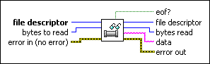

Read From Pipe VI
Owning Palette: Pipes VIs
Requires: Base Development System (Linux)
Reads a number of bytes from a pipe, returning the results in the data string output. For this VI, you must have opened the pipe as a read pipe. The VI does not wait for data, so if the amount of data is not available, the VI returns any available data.

 Add to the block diagram Add to the block diagram |
 Find on the palette Find on the palette |